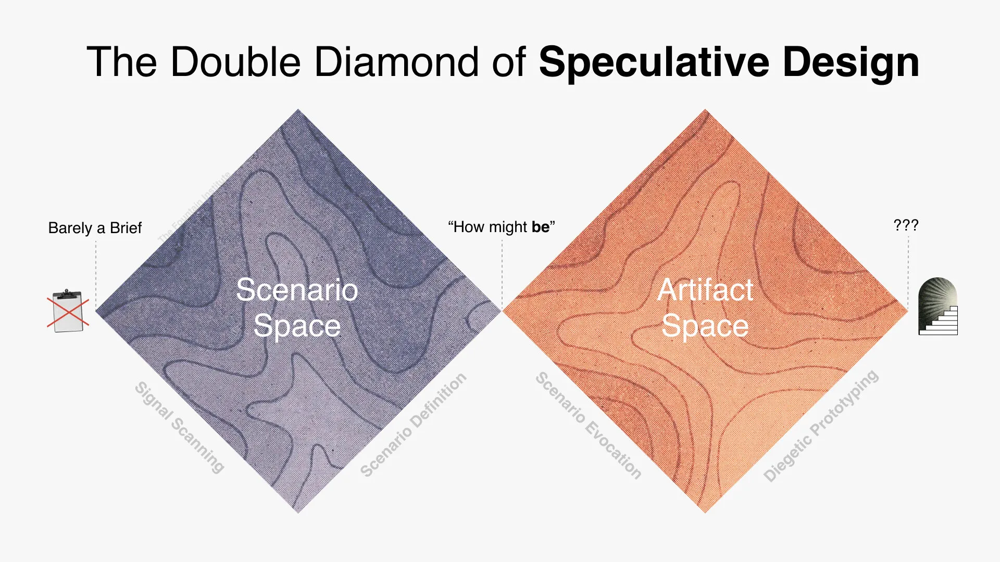
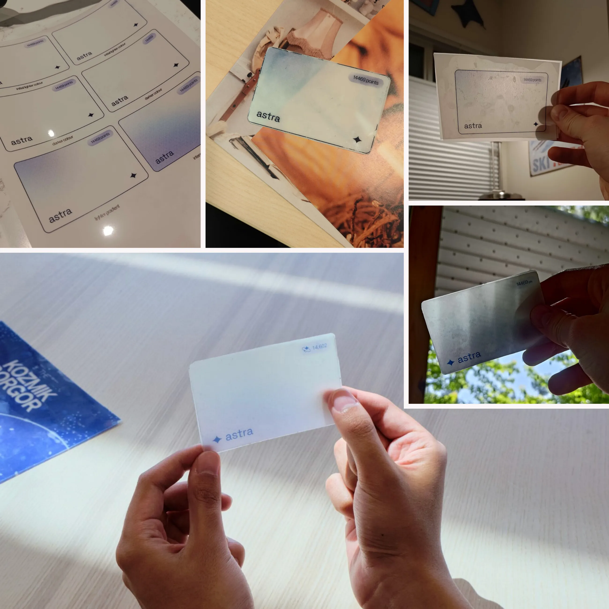

What it is
For SparkJam (a design jam), our team chose to center our project in the speculative design space. We built a strong narrative foundation imagining a future lunar company “Astra” that has a monopoly on the moon. From that future, we designed a set of physical objects (a restaurant menu and a credit card) and an augmented reality interface that lunar citizens use everyday.
Watch the video overview
Don't rush to your solution
Our group chose the “futures track” of SparkJam as we were interested in designing for humans in space. A normal brainstorming session of ideas gave us starting ideas such as what future space mining gear or a space safari tour might look like. However, when we went to present them in a critique session, we realized they held little meaning to us and the world outside of it being linked to one or two current ideas. When we went to build out these worlds further, the design quickly got lost in it. We were stuck tackling this project from the wrong side: trying to design a solution for an empty world/future.
This led me to finding the double diamond design process, a popular tool used to support design processes but adapted to speculative design. I pitched this to the team and we started going through the motions with a starting point of designing for lunar life. We talked about our personal ethics, new scientific innovations, lunar business ventures, and more. This kickstarted the double diamond’s first stage of “signal scanning”. From then on, I hosted the next few discussions for the other steps in the process. It took longer than we expected, but building a rich future world based on the present helped us get a lot farther with Astra’s design. I learned the simple and classic lesson that rushing to a solution, even if you’re a little time constrained, is not a good design decision.
The double diamond of speculative design. From thefountaininstitute.com.

Final narrative statement.
“Monopolistic lunar company "Astra" has colonized the moon and created "Paradise", a lunar colony, and a new currency system coined "Astra Points" to profit from low-income citizens. To ensure overconsumption doesn’t occur in space, individuals surpassing a points limit would lead to a work term.
How might we form a new lunar societal currency to discreetly exploit Paradise residents through regulating the consumption of products to continue Astra’s monopolistic practices?”
Physical making
Our team was desperate to build something physical in SparkJam. We designed a menu and payment card to act as our artifacts from the world, creating physical-digital interactions between the artifacts and the AR interface.
We took a trip to an arts store, exploring papers with varying thickness and transparency to help convey a sense of futurism and advanced technologies. I experimented with the drafting film we chose, balancing the artifact’s rigidity and transparency by glueing layers of the stuff together.
Our main foci were on the material design and digital/physical interaction and less so on what those artifacts were. I echo one judge's sentiment towards our artifacts: that we should have considered creating more novel artifacts that would have aligned more with communicating Astra’s dystopian narrative and/or had more intentionality behind why they existed.
Iterations of the credit card

Physical/digital interaction
More design jams please!
SparkJam opened me up to trying a lot of new things: speculative design and world building, physical prototyping, and designing augmented interfaces that interact with physical artifacts. Attending design jams give me the opportunity to try new passions and ideas in a safe space with a group of friends that all want to improve their design skills. It was a bonus that we received 3rd place in the competition. I look forward to attending SparkJam 2026!